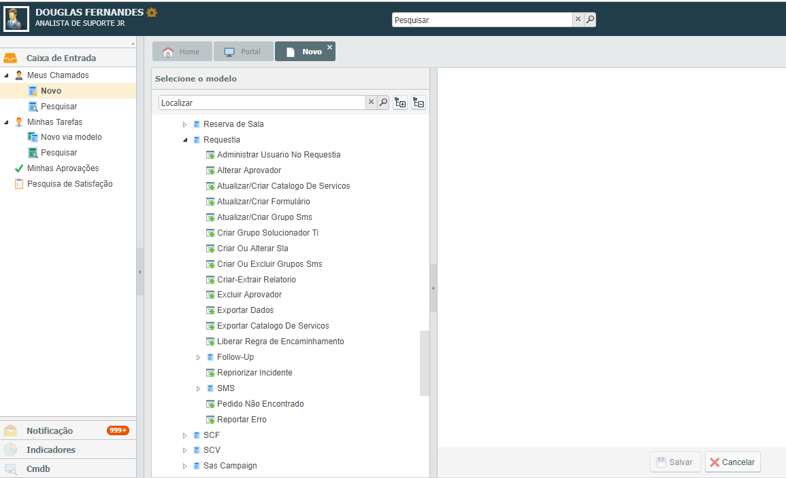
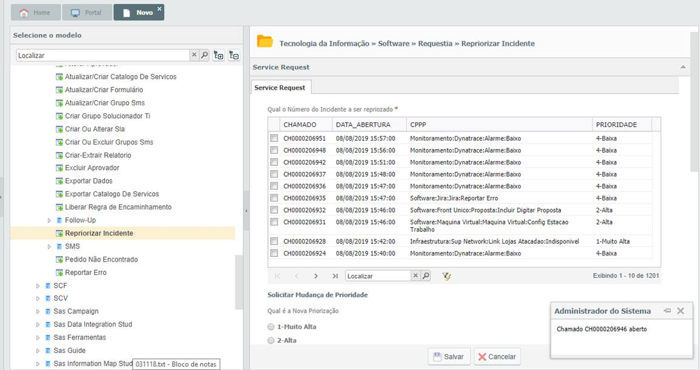
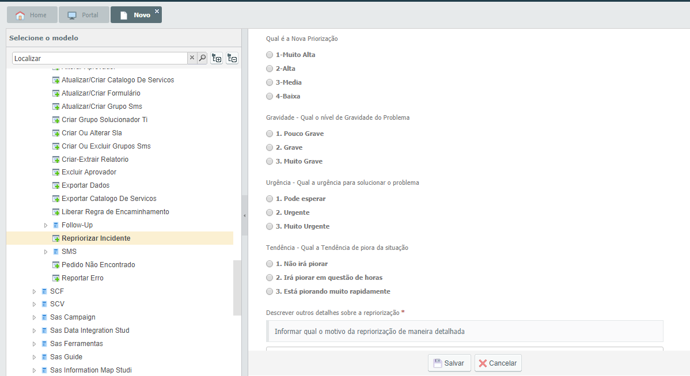

Chamados críticos - LEITURA OBRIGATÓRIA [LEITURA OBRIGATÓRIA] - Gerado por:Douglas Fernandes
Boa Tarde Pessoal,
Segue novo alinhamento para chamados críticos P1
Quando recebermos chamado crítico, devemos realizar o passo a passo abaixo:
Enviar uma mensagem no grupo do WhatsApp TI Atende em até 5 minutos após o recebimento do SMS(novo SLA acordado), enviar no seguinte padrão: “Validando chamado crítico ‹número do chamado› ”
Após, devemos realizar a validação do chamado, e enviaremos no grupo a análise como exemplo abaixo:
Aberto chamado crítico CH0000206746, como “ Infraestrutura » Windows » Produção » Indisponibilidade de Serviço”, validado que o caso é realmente crítico, impacta 30 pessoas pois o ambiente está fora do ar.
Porém temos algumas exceções, como por exemplo:
Os ambientes Homologação/ Certificação NÃO são chamados críticos, onde sempre que recebermos como P1, devemos recategorizar para P3 (Média)
Outro caso são os chamados abertos como “Tecnologia da Informação»Operações TSYS”, que devemos apenas validar se o usuário selecionou o arquivo da lista que aparece junto a pergunta “Qual arquivo Tsys ainda não foi recebido”, em caso positivo, informamos no grupo no mesmo padrão mencionado acima e relatar que foi selecionado, caso estiver selecionado “Outros”, devemos entrar em contato para validar se foi aberto da forma correta e validar com a gestão.
OBS: Todos os chamados críticos, é obrigatório a validação.
Processo para repriorizar
-
Devemos abrir um chamado como cliente, e ir até o caminho &Ldquo;Tecnologia da Informação:Software:Requestia:Repriorizar Incidente” (conforme abaixo)
IMPORTANTE: Esse catálogo só aparece no perfil de cliente, como analista o mesmo não aparece

-
Aparecerá uma lista, onde devemos selecionar o chamado que vamos repriorizar

-
E por fim, selecionamos a Prioridade que o chamado deverá ficar e salvamos.
